24 Hour International Marathon Meeting of A.A. — 24/7 Online A.A. Meeting
- Click the button.
- Zoom will open directly.
- You can just sit back and listen; you do not have to turn on your camera unless you want to.
- If you would like to share, raise your virtual hand. The chairperson will call on hands in the order they are raised.
Join a live 24/7 Online A.A. Meeting on Zoom. This is an open international Alcoholics Anonymous meeting with a new session every hour. Join now with Zoom Meeting ID 292 371 2604. No password required.
Where Sobriety Never Sleeps

Quick Answers About this 24/7 Online A.A. Meeting
New to A.A.? Start with our Primary Purpose and Three Legacies to understand the Fellowship's foundation.
What to Expect When You Enter the 24 Hour International Marathon Meeting of AA
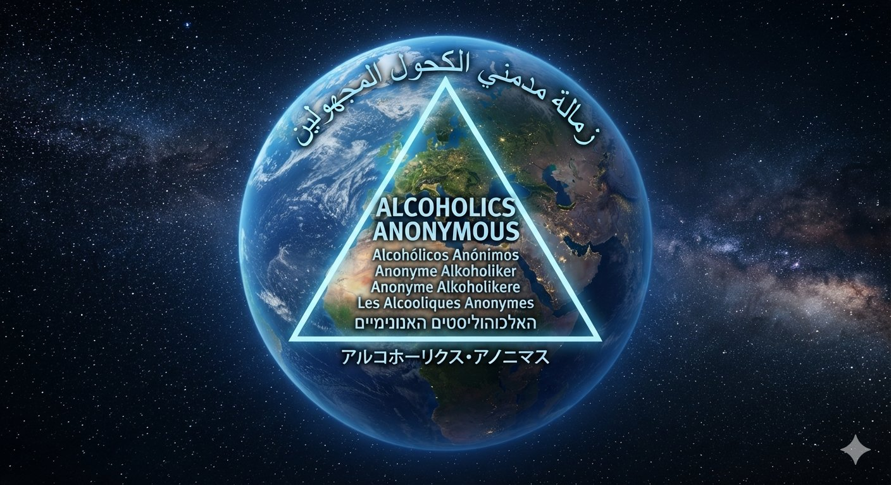
Welcome to Online Recovery
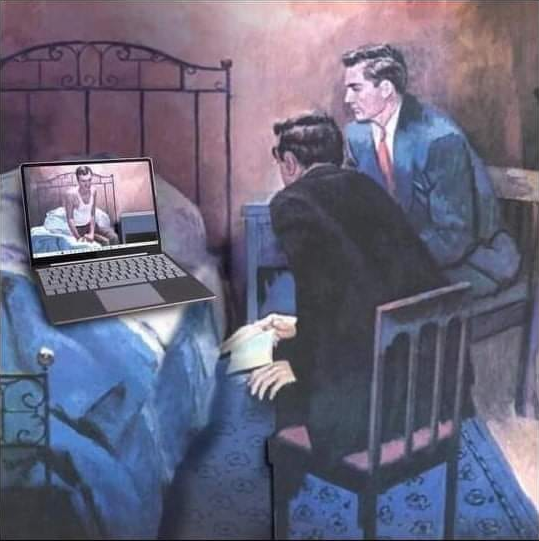
Welcome to the 24 Hour International Marathon Meeting of A.A., where sobriety never sleeps. We are an open meeting of Alcoholics Anonymous, and everyone is welcome to listen. In keeping with A.A.'s singleness of purpose and our Third Tradition, which states that the only requirement for A.A. membership is a desire to stop drinking, we ask that everyone who shares in our meeting confine their discussion to their problems with alcohol. You can join our online recovery meeting by clicking the "Join Online A.A. Meeting" button above or by joining the meeting through Zoom. The access code is 292 371 2604. Join our online recovery meeting and raise your virtual hand. We want to get to know you, and experience has taught us that we can help best if you talk to us. We call on hands in the order they are raised, and everyone gets five minutes to share, with a gentle reminder when there is one minute remaining.
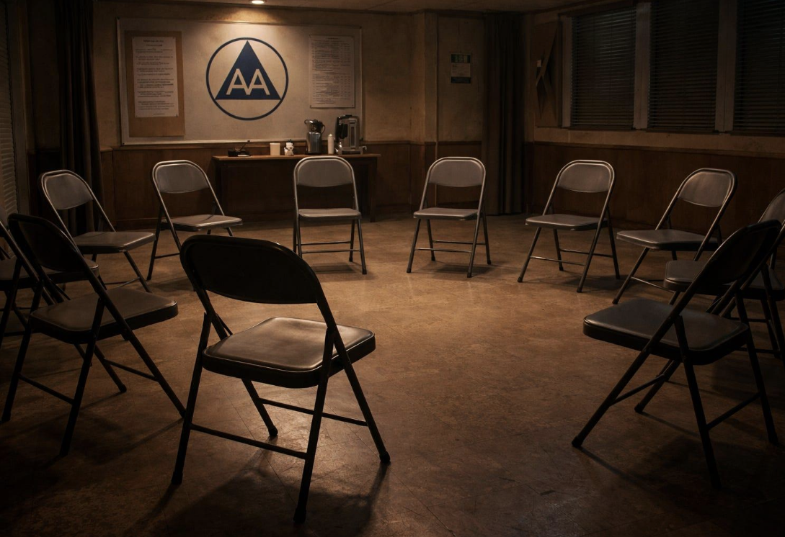
The 24 Hour International Marathon Meeting of A.A., where sobriety never sleeps, is dedicated to carrying A.A.'s life-saving message of hope and recovery globally to the alcoholic who still suffers. Individuals seeking support for drug problems and substance use disorders may benefit from professional treatment programs, government resources, rehabilitation services, family support organizations, and other recovery programs and fellowships. Alcoholics Anonymous is not affiliated with any outside agency or enterprise.
- Click the button.
- Zoom will open directly.
- You can just sit back and listen; you do not have to turn on your camera unless you want to.
- If you would like to share, raise your virtual hand. The chairperson will call on hands in the order they are raised.
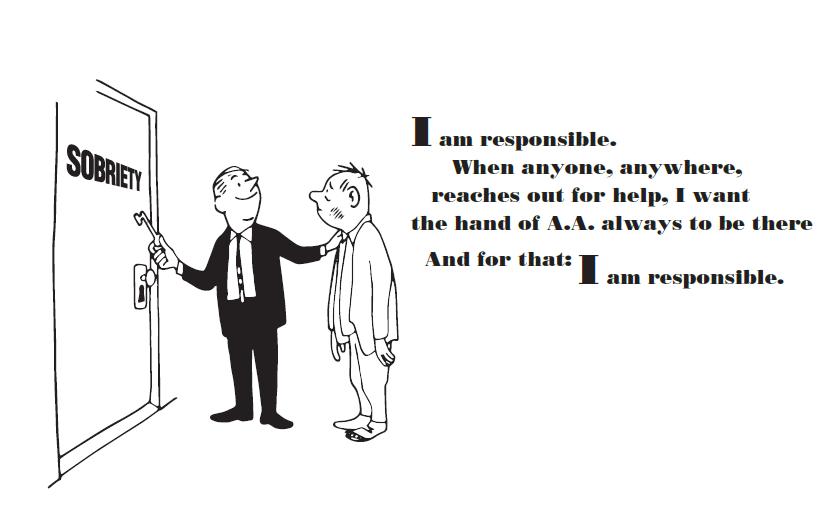
Preamble of A.A.
Alcoholics Anonymous is a fellowship of people who share their experience, strength, and hope with each other so that they may solve their common problem and help others recover from alcoholism. The only requirement for membership is a desire to stop drinking. There are no dues or fees for A.A. membership; we are self-supporting through our own contributions. A.A. is not allied with any sect, denomination, politics, organization, or institution; does not wish to engage in any controversy, neither endorses nor opposes any causes. Our primary purpose is to stay sober and help other alcoholics achieve sobriety.
Copyright by A.A. Grapevine, Inc.; reprinted with permission.
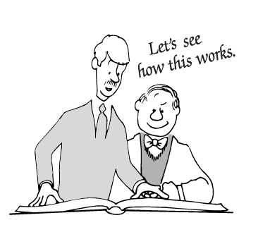
Read the full text of A.A.'s Twelve Steps and Twelve Traditions, the Declaration of Unity, and the Toronto Responsibility Statement on our Three Legacies page. New to A.A.? The General Service Office pamphlet "A Newcomer Asks" is a good place to start; see more on our AA Literature page.
Contact This Meeting
This link will connect you with the 24 Hour International Marathon Meeting of A.A. (Where sobriety never sleeps).
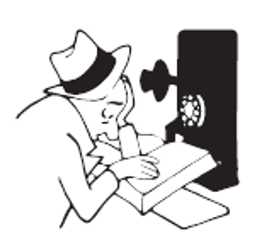
International A.A. Websites
Alcoholics Anonymous is a global fellowship. The link below leads to many official international A.A. websites.
Explore International A.A. Websites
Do You Have a Drinking Problem?
Not sure if drinking has become a problem? Our Drinking Problem page walks through the CAGE questionnaire, a short screening tool recognized by institutions such as Johns Hopkins University Hospital, along with A.A.'s own two questions for self-assessment.
Do You Have a Drinking Problem?
A.A. Literature
The button below leads to A.A. General Service Conference-approved literature.
Access A.A. General Service Conference-approved Literature
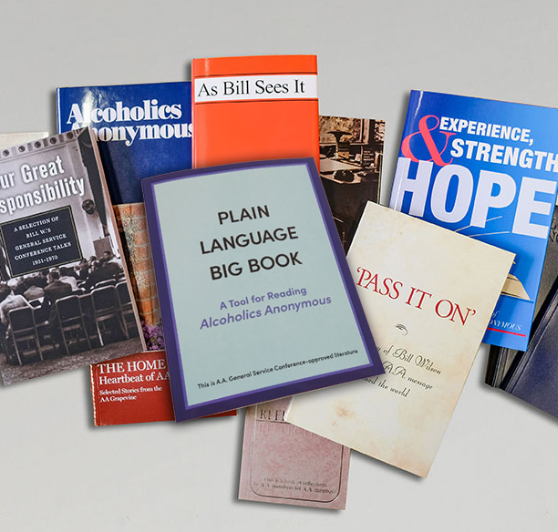
See also: A.A. Grapevine and La Viña for member-written stories and insights.
Crisis and Mental Health Resources
Alcoholics Anonymous is not affiliated with any outside entities or organizations. The link below leads to non-A.A. crisis and mental health resources.
Access Crisis and Mental Health Support
Also explore: Substance Abuse and Drug Rehabilitation Resources and Meeting Topics for peer support.
Frequently Asked Questions about Alcoholics Anonymous and the 24 Hour International Marathon Meeting of A.A.
Need quick answers before joining? Visit our dedicated FAQ page for common questions about the meeting, attendance, safety, anonymity, and participation.
Browse Frequently Asked Questions
Related: Quick Answers | What to Expect
To join right away, use the Zoom ID 292 371 2604 or click the button below:
- Click the button.
- Zoom will open directly.
- You can just sit back and listen; you do not have to turn on your camera unless you want to.
- If you would like to share, raise your virtual hand. The chairperson will call on hands in the order they are raised.
Recovery Resources
A.A.'s Eighth Tradition states: "Alcoholics Anonymous should remain forever nonprofessional, but our service centers may employ special workers." The link below leads to a variety of non-A.A. recovery-related resources. Inclusion on this website does not indicate endorsement or affiliation. Our aim is to be helpful and to cooperate with our friends.
Find Substance Abuse and Rehabilitation Resources
Complement with: Crisis and Mental Health Resources
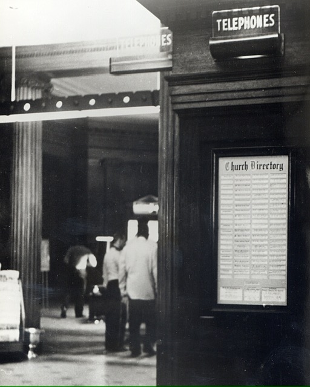
Topics for Online A.A. Meetings
The link below leads to possible topics for A.A. meetings. Other topics can be found in the pamphlet "The A.A. Group" and the book "As Bill Sees It." These titles, and many others are available at www.aa.org.
View Meeting Topics and Discussion Ideas
Read: A.A.'s Primary Purpose and Three Legacies to ground your discussions.
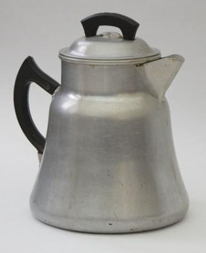
A.A.'s Primary Purpose
Our Twelfth Step—carrying the message—is the basic service that the A.A. Fellowship gives; this is our principal aim and the main reason for our existence. Therefore, A.A. is more than a set of principles; it is a society of alcoholics in action. We must carry the message, else we ourselves can wither and those who have not been given the truth may die.
Learn About A.A.'s Primary Purpose
Connection: A.A.'s Three Legacies provide the framework for this purpose.
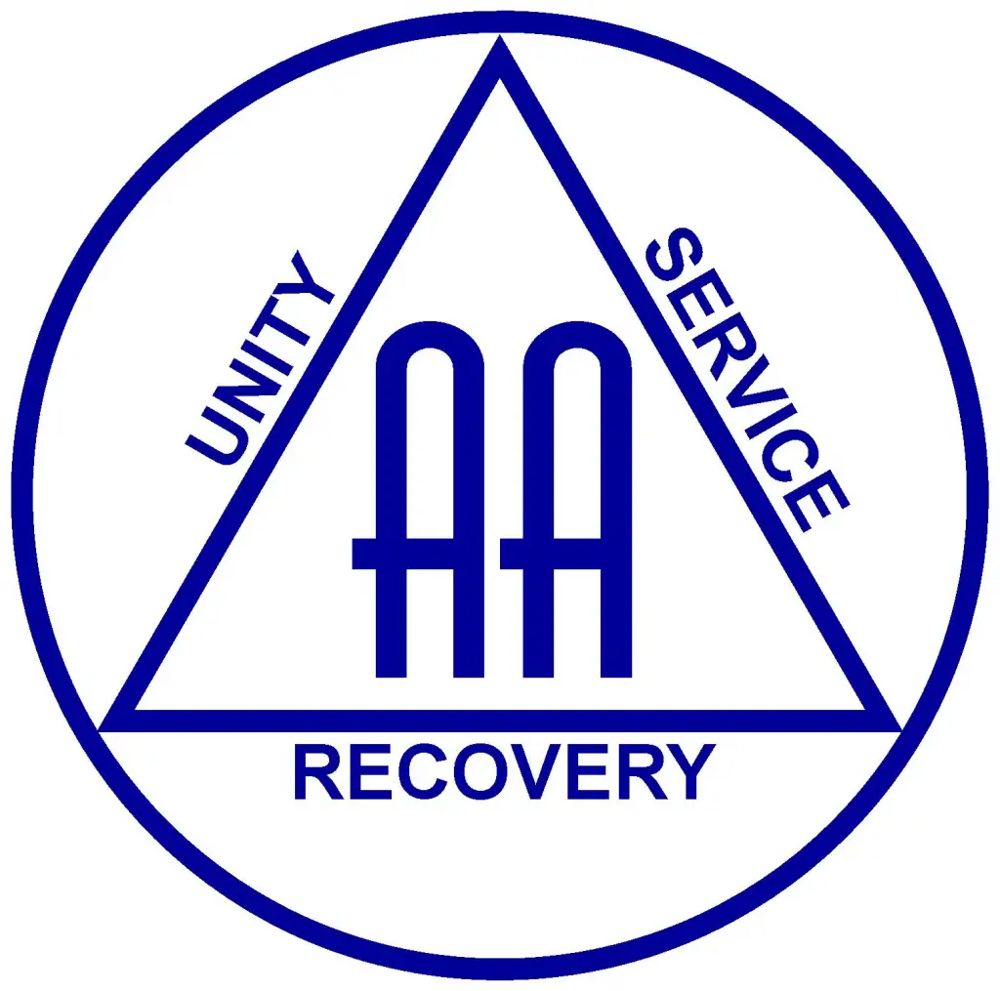
A.A.'s Three Legacies: Recovery, Unity, and Service
The Three Legacies of Alcoholics Anonymous are Recovery, Unity, and Service. By the first, we recover from alcoholism; by the second, we stay together in unity; and by the third, our society functions and serves its primary purpose of carrying the A.A. message to all who need it and want it. (Alcoholics Anonymous Comes of Age: A Brief History of A.A.)
Learn About A.A.'s Three Legacies
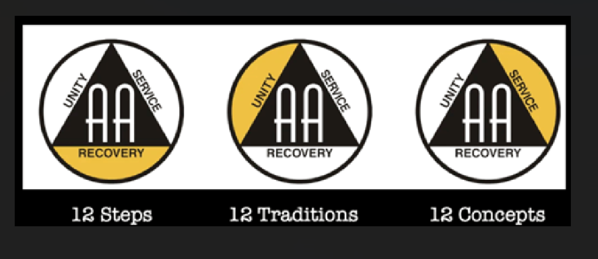
Sponsorship in A.A.
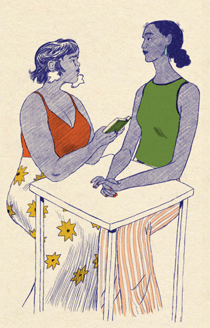
The A.A. Group...Where It All Begins
Any gathering of two or more alcoholics who wish to recover, with no other affiliation, may call themselves an A.A. group. Learn more in the General Service Conference-approved pamphlet.
The A.A. Group...Where It All Begins
Problems Other Than Alcohol
A.A. members are sometimes asked what the Fellowship can do about drug addiction. Our Problems Other Than Alcohol page answers common questions about non-alcoholic membership.
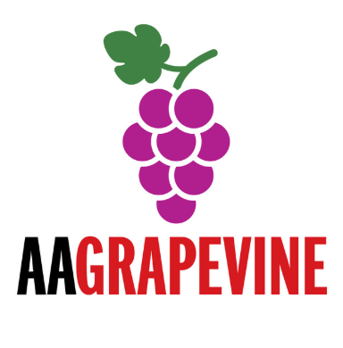
A.A. Grapevine and La Viña
A.A.'s "meeting in print" and its Spanish-language counterpart share stories, humor, and insights from members worldwide.
Read A.A. Grapevine and La Viña Publications
Explore: A.A. Literature | Meeting Topics
About This Meeting
The link below provides relevant information concerning the 24 Hour International Marathon Meeting of A.A. (Where sobriety never sleeps).
Learn More About this 24 Hour International Marathon Meeting
Connect with: A.A.'s Three Legacies | Primary Purpose
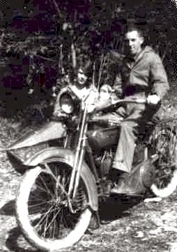
A.A. World Services and A.A. General Service Office
Contact the A.A. General Service Office (GSO)
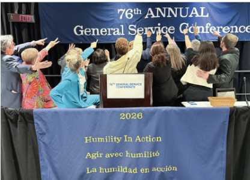
Learn about Box 459, the World Service Meeting, and A.A.'s service structure worldwide on our Three Legacies page.
Disclaimer and Permissions
For the full legal notice, permissions, and related guidance, see the page below.
Read Our Disclaimer and Permissions
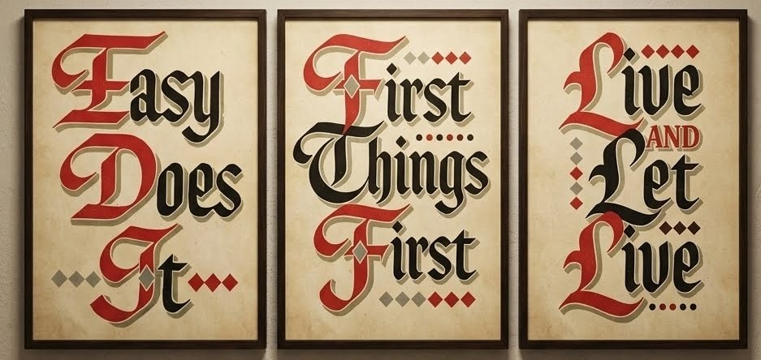
- Click the button.
- Zoom will open directly.
- You can just sit back and listen; you do not have to turn on your camera unless you want to.
- If you would like to share, raise your virtual hand. The chairperson will call on hands in the order they are raised.
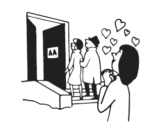
Quick Links and Resources
Getting Started
A.A. Foundation
Support & Resources
About & Legal
Serenity Prayer
God, grant me the Serenity to accept the things I cannot change,
Courage to change the things I can,
and Wisdom to know the difference.